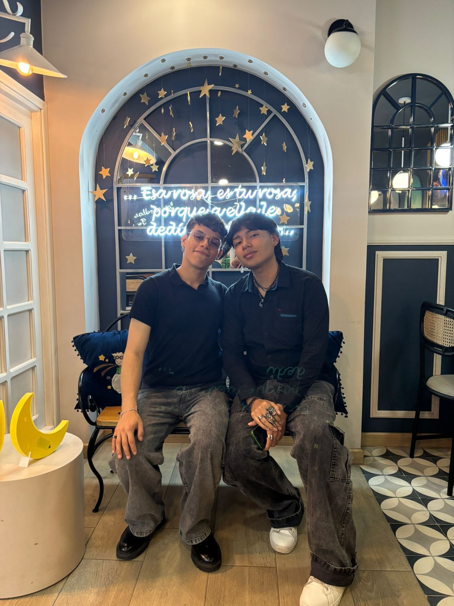
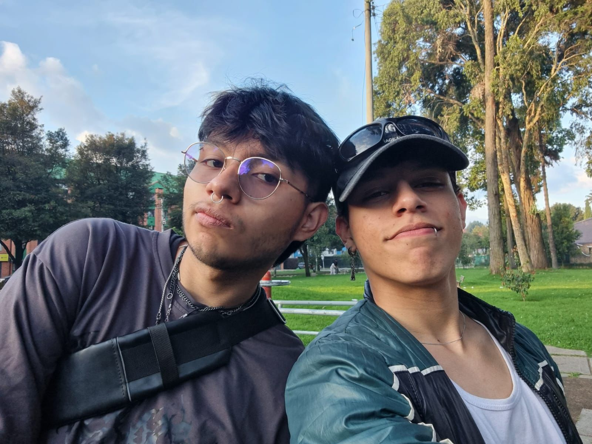
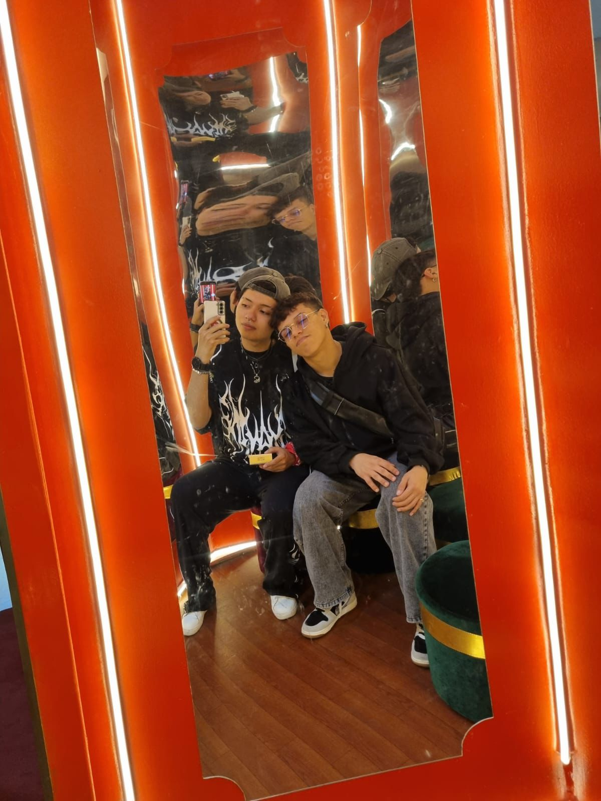
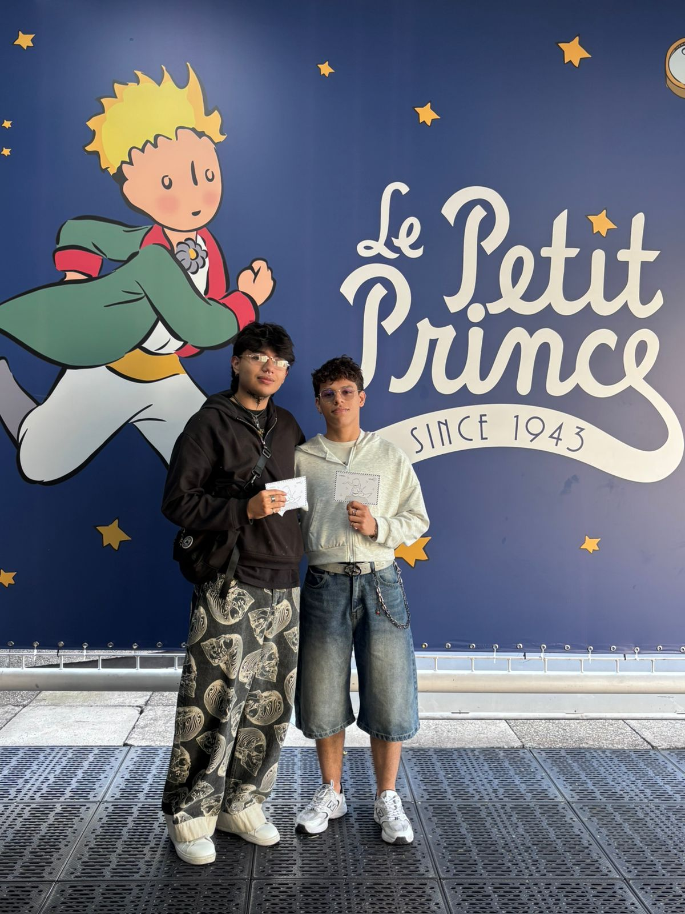
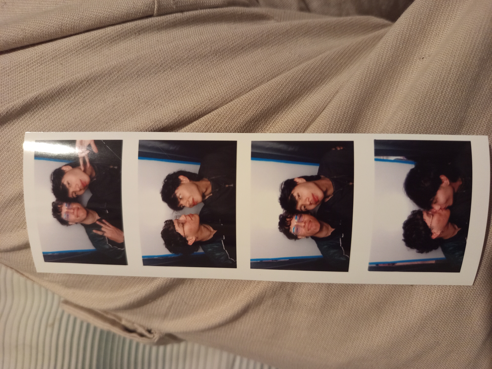
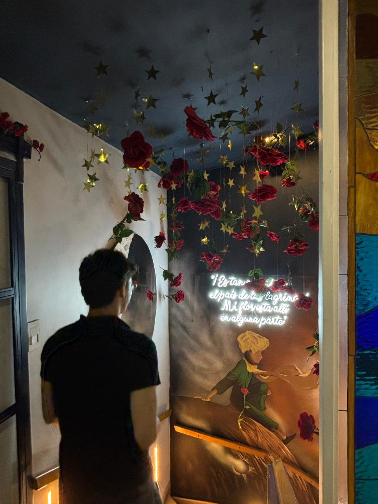

Este es un pequeño lugar para recordar lo mucho que te amo
Kenneth
Hola xd, me gustaria decirte y recordarte cosas que pienso, varias veces recuerdo cuando te conocí; de hecho, he hablado eso contigo. Realmente era algo que sucedió de repente y, desde ese momento, me he dado cuenta de que eres alguien lindo, alguien atento que ha hecho varias cosas por mí, por hacerme sentir mejor; alguien que ha buscado la forma de ayudarme, de hacer las cosas juntos, y eso ha sido muy importante. No habría palabras o forma de expresar lo feliz que me has hecho. Nunca me cansaré de decirte que te amo de aquí hasta el fin de los dígitos de pi. Estoy muy orgulloso de ti, de todo lo que has logrado, y siempre te apoyaré.





Yo otra vez jajajja
Me gusta mucho estar contigo, jajajajaj; es como que, aunque todo esté mal, se sienta perdido, confuso o lo que sea, estar a tu lado ayuda a olvidar eso.
Siento que, después de tener un mal día, pensar en ti ayuda mucho. Recuerdo cuando salía de trabajar y verte
o estar contigo ayudaba mucho; después de todo este tiempo, sigo pensando igual: eres alguien que se ha esforzado mucho y me
hace feliz hacer parte de tu vida para ver eso. Sé que vas a lograr todo lo que te propongas; mira que siempre va a pasar algo, cosas buenas o malas,
pero siempre estaremos juntos para afrontar todo. Tú y yo será más fuerte que cualquier cosa. Te amoooooooo.
Nunca estarás solo; tú eres muy importante para mí y espero que en cada acción se note esto. Cada día me he enamorado más de ti.
Con amor,
Juan Sebastian
Flores para ti
Estas flores están dibujadas solo para ti. Las flores son tan lindas como tú.
De mis fotos favoritas

“Si el Principito te conociera, entendería que no hacen falta más planetas por visitar, porque cuando uno encuentra a alguien que cuida su corazón, que lo acompaña
incluso en los días grises y que lo hace sonreír sin darse cuenta, ya encontró su lugar en el universo. Contigo, yo ya encontré el mío.”
Sueño contigo
Diría que esta canción representa muy bien lo que pasa cuando pienso en ti.